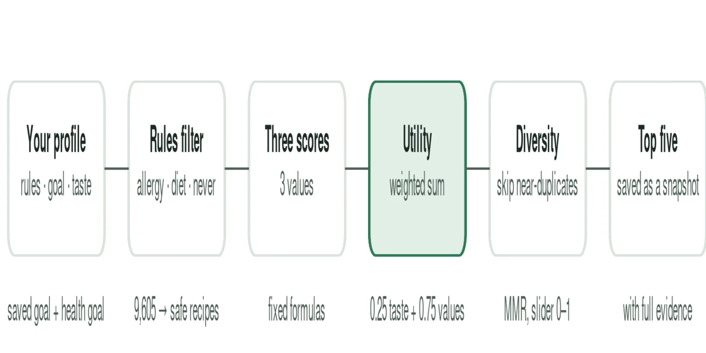
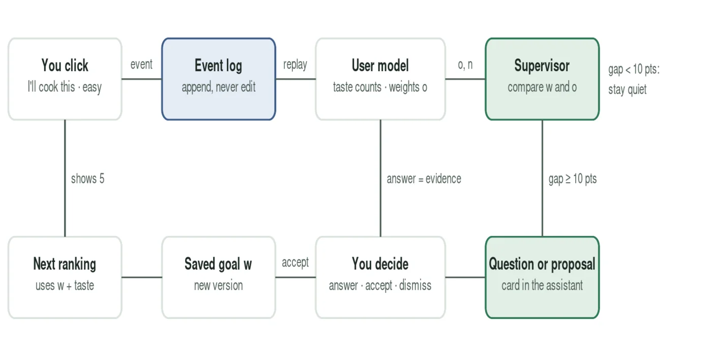
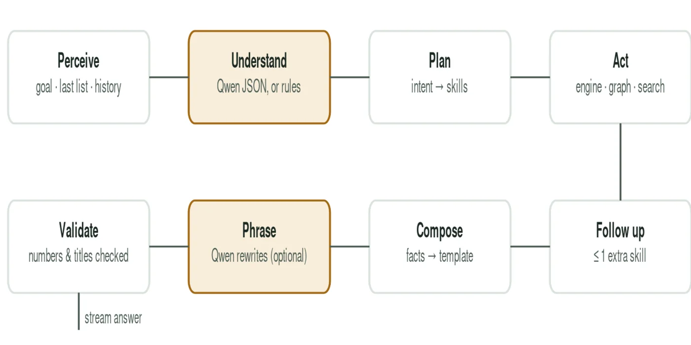

Overview
FoodRec ranks recipes by values each user controls (healthiness, sustainability and convenience) plus a learned share for taste. A supervisor agent watches the learning process. When what a user says they want and what they actually choose drift apart, it looks up their history in a knowledge graph and asks a question or proposes a change, with the evidence. Nothing about a user's goal changes until they accept.
9,605recipes (HUMMUS / food.com)
300live simulated study runs
−87%needless interruptions at τ = 0.30
129automated tests
What I built
- Auditable ranking. A deterministic multi-criteria engine scores every recipe. Allergies and diets are hard rules, with explicit policies for missing data, diversity and freshness across days. Every score can be opened.
- Supervisor agent. Compares behaviour-learned weights with the saved goal, checks the knowledge graph for evidence, and asks or proposes, never silently overwrites.
- Constrained language model. The LLM only classifies messages, chooses among fixed options and phrases answers; any wording the evidence doesn't support is rejected. Works with a local 2B model (Ollama), a hosted API, or no model at all.
- Research tooling. Participant accounts, a config page, scripted scenarios, a guided tour and a standard per-user export for analysis.
Evaluation
- A simulation harness with GPT-4o playing 10 personas whose real preferences are hidden from FoodRec: 6 scenarios (stable, wrong onboarding, feedback mistakes, temporary circumstances, abrupt and gradual change) × 5 intervention thresholds, plus silent and replay runs, about 68,000 reactions in total.
- Bias controls: no numbers in prompts, shuffled dish order, decision before reactions, and a hidden-state check. Measured position bias was flat (23 / 21 / 17 / 20 / 18%).
- Raising the threshold from 0.10 to 0.30 removed about 87% of unnecessary notifications, at the cost of detecting about 10% fewer real changes, about two rounds later. No threshold produced a wrong goal change.
Live runs, all personas
| Threshold | Changes detected | Mean delay (rounds) | Unnecessary / 100 rounds | Precision |
|---|---|---|---|---|
| 0.10 | 93% | 1.5 | 34.3 | 50% |
| 0.15 | 94% | 1.9 | 23.7 | 53% |
| 0.30 | 84% | 3.6 | 4.3 | 79% |
| 0.45 | 57% | 4.5 | 0.5 | 94% |
| 0.60 | 20% | 5.0 | 0 | 100% |
Gallery


